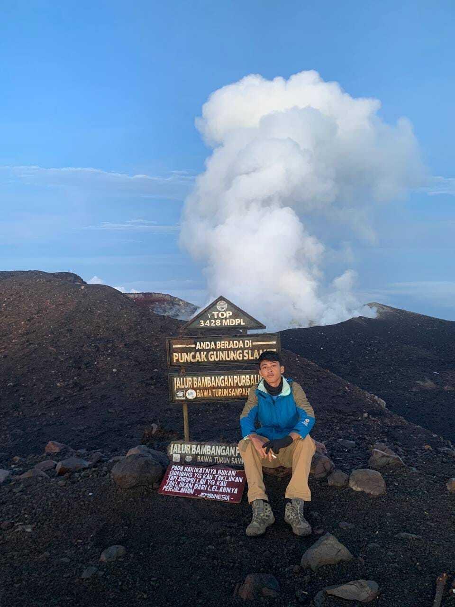

Gunung Slamet
Gunung Slamet adalah gunung berapi tertinggi kedua di Pulau Jawa dan menjadi gunung tertinggi di Provinsi Jawa Tengah. Jalur pendakiannya terkenal panjang dan menantang, melewati hutan tropis, ladang, hingga savana menjelang puncak.
Pendakian ke Gunung Slamet menjadi salah satu pengalaman paling berkesan. Trek yang panjang dan medan berpasir di dekat puncak menguji stamina, namun sunrise dari puncaknya terbayar dengan pemandangan awan yang membentang luas di bawah kaki.